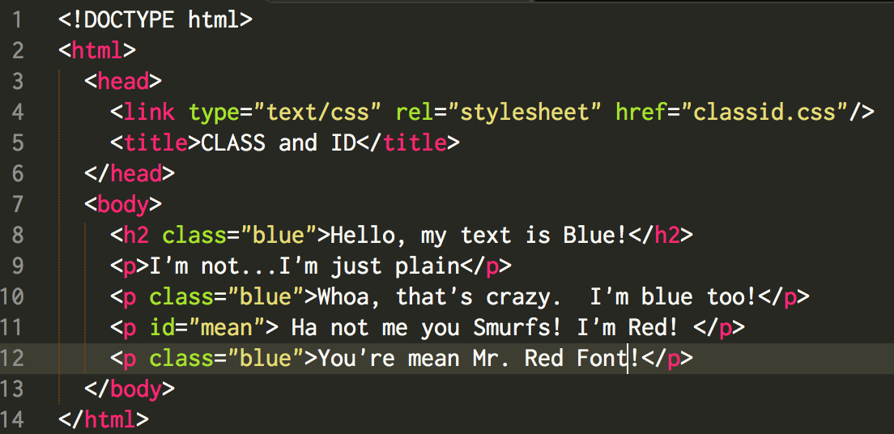
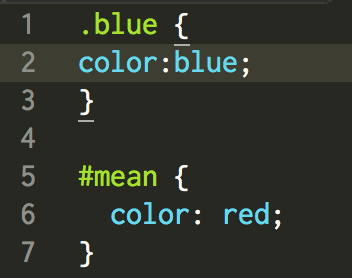
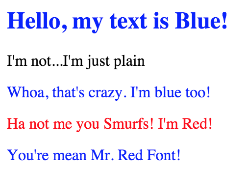

Classes and ID’s are extremely useful when using CSS (Cascading Style Sheets), but many people struggle with how to use them properly. In this short blog, I want to give you a few examples of what the best practices for each are and how to use them.
You will want to use Classes when you need to style multiple HTML elements at the same time. For example, lets say that we are trying to style an article for a website that is using multiple paragraphs and we need them all to display the same font, size, and color. This isn’t like Microsoft Word where we just highlight everything and hit the Time New Roman Button, there’s a lot more that needs to be done and this is why Classes can be so handy.
So if a Class styles multiple HTML elements, what does an ID do? An ID Selector is used to style 1 single, unique element. The ID selector is also defined with a “#”, while the Class selector is defined with a “.”
Let’s check out the images below for examples on using both the ID and Class selector.

In the image above we see all of our HTML. Can you see where the Classes and ID’s are? There should be 3 classes listed “blue” and one ID listed “mean.” Also notice that “blue” is used after the h2(header) and the 3rd and last p(paragraphs). This is an example of styling multiple elements of HTML at one time with Classes. We also used the #mean as an ID to style the 4th paragraph red. Keep in mind that nothing was done do the 2nd line, we will see what happens when no styling is added in the last image example.

This image above shows us our CSS. Do you see “.blue” and “#mean”. The .blue is telling everything that we labeled under the class=“blue” to make the font color blue. The #mean is telling our class="mean" to make the font color red.
So now that we have looked at all of our HTML and CSS, let's take a look at the finished product and what it would look like on an actual website.

Pretty cool, right? Using the same classes we created, we could also change the font, add a colored background, or make things bold. This is what Classes and Id's can do!